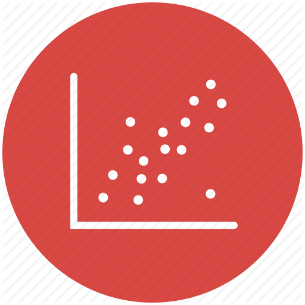
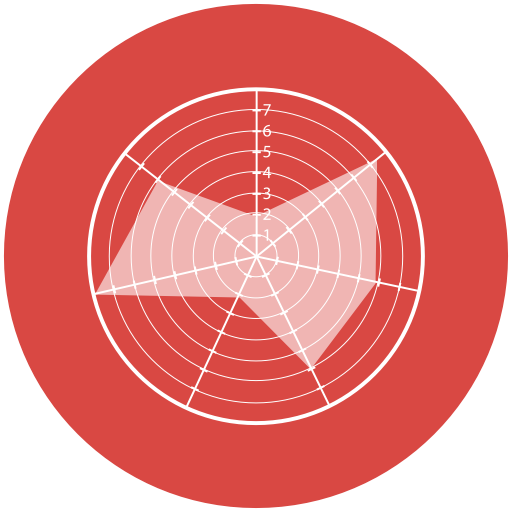

<main>
	<h2>Relación</h2>
	<h3>Dos Variables (Gráficos recomendados)</h3>
	<section class="charts">
				<article>
					<a href="grafico-dispersion.html">
					<h3>Diagrama de dispersión</h3></a>
				</article>
	</section>
	<h3>Más de dos variables (Gráficos recomendados)</h3>
	<section class="charts">
		<article>
					<a href="grafico-burbuja.html">
					<h3>Gráfico de Burbujas</h3></a>
				</article>
				<article>
					<a href="grafico-columnas.html">
					<h3>Gráfico de Columnas</h3></a>
				</article>
				<article>
					<a href="grafico-linea.html">
					<h3>Gráfico de Línea</h3></a>
				</article>
				<article>
					<a href="grafico-columnas-apiladas.html">
					<h3>Gráfico de Columnas Apiladas</h3></a>
				</article>
				<article>
					<a href="grafico-radar.html">
					<h3>Gráfico de Radar</h3></a>
				</article>
				<article>
					<a href="grafico-area-apilada.html">
					<h3>Gráfico de Área Apilada</h3></a>
				</article>
				
	</section>

</main>